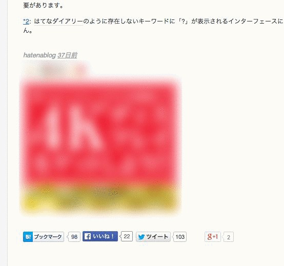
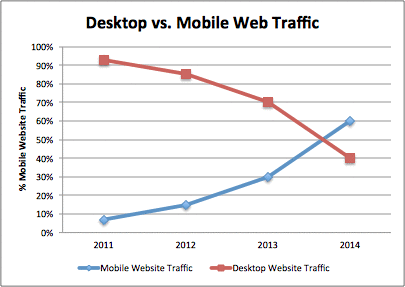

無料ブログサービスの大きな落とし穴

Githubに引っ越した理由
ちょうど本日、新しいサイトに移行をしました。
以前は皆さんご存知の「はてなブログ」を使っていました。
はてなブログは非常に使いやすく、長年使ってきました。
しかし今回、 ある理由 でGithubへの乗り換えを決意しました。
乗り換えた理由、それは…
その理由は「はてな」に限ったことではないですが、ずばり 収益 です。
なんだか生々しい話だとは思いますが、かなり役立つ話だと思うので詳しく解説します。
はてなやアメブロはSEOが良い
はてなやアメブロなどのブログサービスでブログを書いていると、かなりアクセスが多いということに気づきます。
このことはいろんな方が実感されているようです。
これはコンテンツ自体の質もあると思いますが、１つ大きな理由があると思います。
それは『はてなやアメブロ自体の収益』につながるからです。
はてなやアメブロの収益構造
例えばはてなブログ開発者ブログを例に取ります。
１つの記事の下の方を見てみると、必ず 広告 が付いています。

もし広告が付いていないとすれば、それは 有料ユーザ です。
これらの広告は、ページの１日あたりのアクセス数、クリック数などに比例して収入が得られる仕組みになっています。
つまり、ブログのアクセスが増えることは、直接はてなの収入につながる ということです。
ただここまでは知っている人も多いと思います。
ですが、このことは要するに、収入を得ようとしなければ無料ですが、収入を得ようとすると妨げられるということです。
ユーザが作ったコンテンツを使って、はてなやアメブロは収入を得ているという訳ですね。
はてなの有料ユーザ（Pro）の落とし穴
以上を読めば想像がつくと思いますが、広告は月額料金を払うと非表示にすることができます。
広告を消すと会社の利益が減るので、月額料金制にするのは当然ですが、はてなに限っては大きな落とし穴があります。
それは、モバイル版の広告は消えない ということです。
モバイルの重要性

Googleが2012年末に発表した情報では、2012年からデスクトップでの検索は減少に転じたそうです。
つまり、ブログのアクセス数はモバイルが増える傾向にあり、モバイルページこそ広告を出すべきだということです。
「はてな」はこのことに着目しているようですが、なんだか卑怯ですね。
モバイルはWebコンソールが不十分なので、気づきにくいということも加わってます。
あるブログでは同じ条件下ではてなでは収益が半分になったと書いている人もいました。
結論
以上を踏まえると、
- 無料ブログサービスで収益を得るためには、一定の投資が必要。
- 特にはてなでは、モバイルから収益を得ることは現状不可能。
ということになります。「無料より高いものはない」という言葉がありますが、まさにその通りですね。
対策
ということで私はGithubに引っ越したわけですが、GithubではPHPやデータベースが使えません。
Githubでブログを書くには、すべて静的ファイルでブログを作る必要があります。手書きでも出来なくもないですが、結論としては専用のツールを使うのがおすすめです。
ということで、次回はGithubでブログを始める方法を書こうと思います。
（せっかちな人は、フッターに使ったツールのリンクがあるので調べてみてください。）